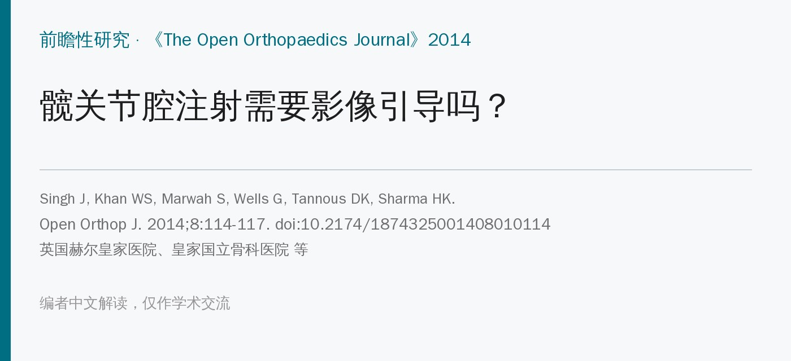
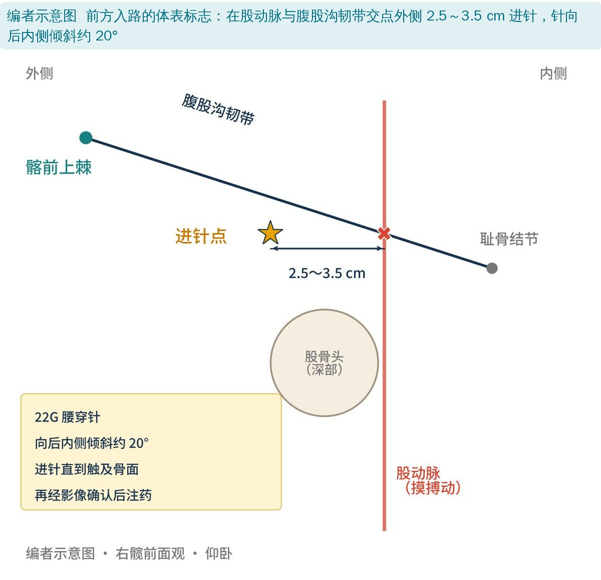
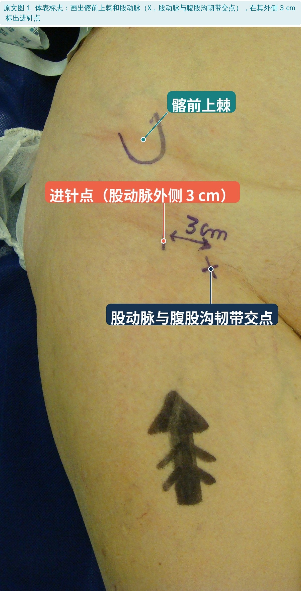
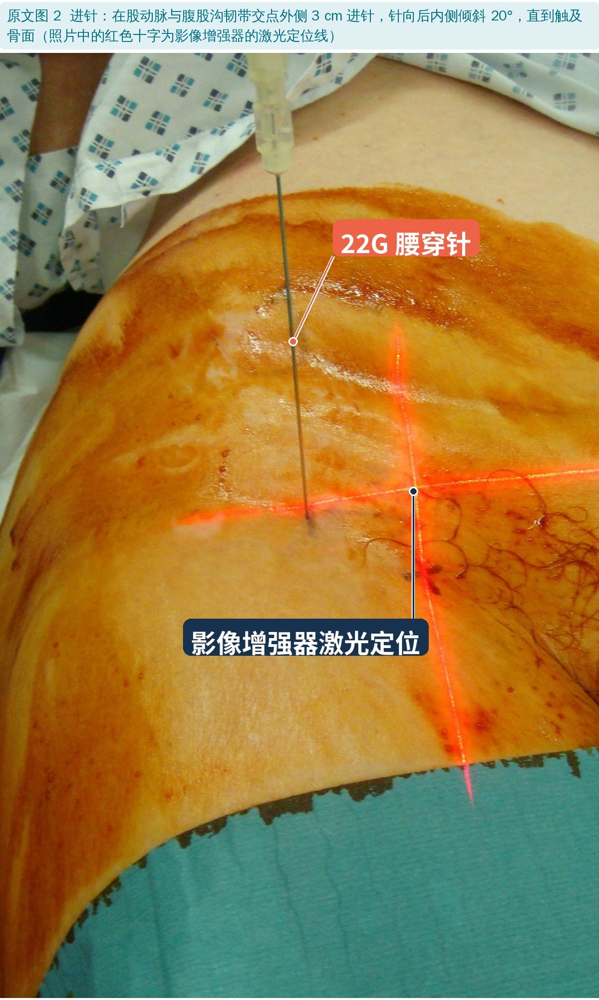
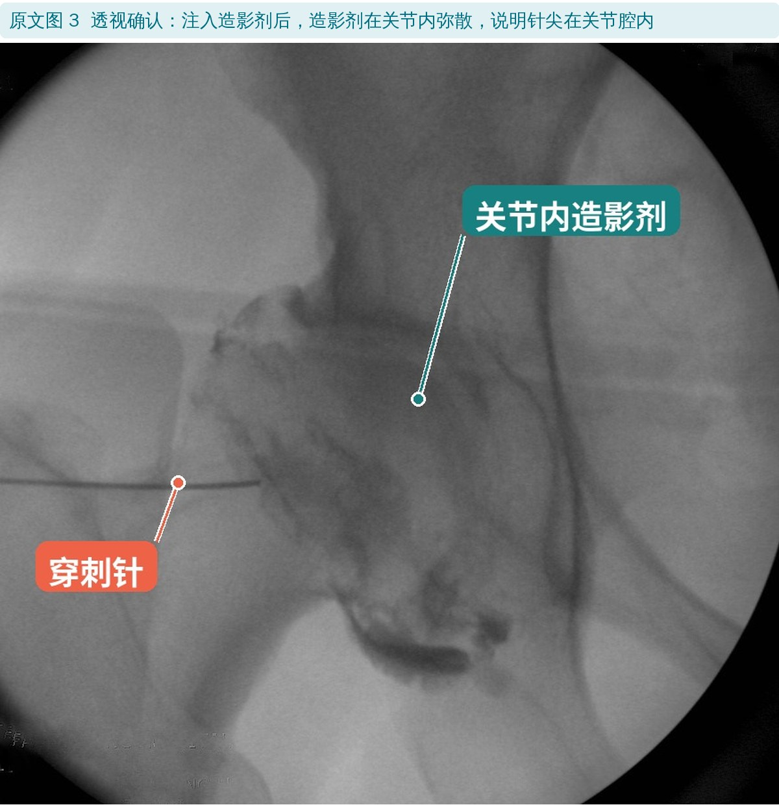
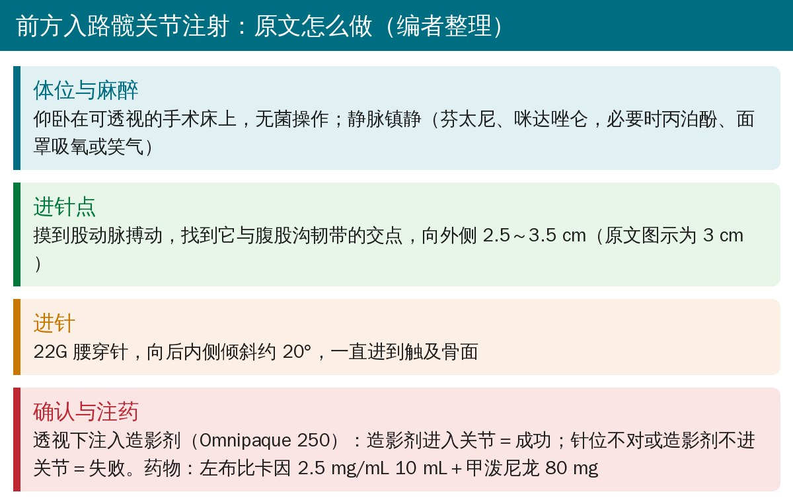
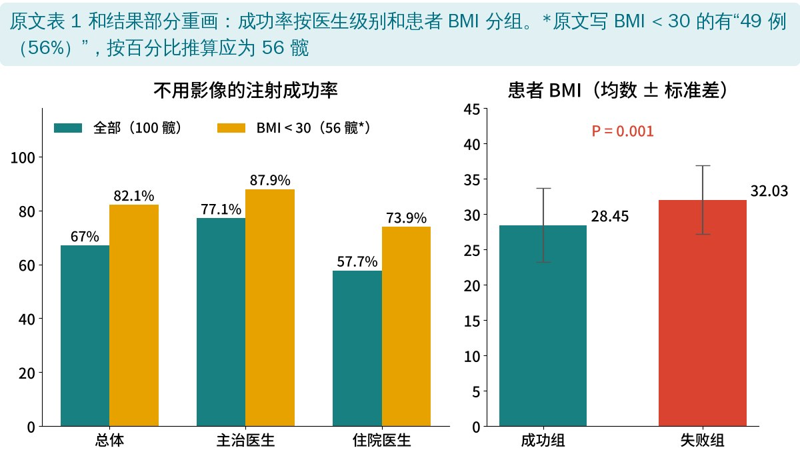

🔖原文信息（编者中文重排）
📚 文献信息
▪ Singh J, Khan WS, Marwah S, Wells G, Tannous DK, Sharma HK. Do We Need Radiological Guidance for Intra-Articular Hip Injections? The Open Orthopaedics Journal. 2014;8:114-117. doi:10.2174/1874325001408010114
▪ 作者单位：英国皇家伦敦医院创伤骨科、皇家国立骨科医院、赫尔皇家医院创伤骨科
▪ 文章类型：前瞻性病例系列（87 例患者，100 个髋），没有对照组
髋关节腔注射既用来诊断（打完麻药疼痛明显减轻，说明痛源在关节内），也用来治疗（激素等）。髋关节位置深、周围有股动脉、股神经，很多骨科和放射科医生习惯在透视或超声引导下做；风湿科和疼痛科医生则常常凭体表标志“盲打”。
不用影像的好处很明显：便宜、没有辐射、不用造影剂、不用住院。但到底能打得多准？以往研究结论不一，而且很少考虑操作者经验和患者胖瘦这两个因素。
• 对象：计划做诊断或治疗性髋关节注射的症状性髋骨关节炎患者，87 例共 100 个髋；平均 69 岁（43～96 岁），平均 BMI 30.2（19.2～43.2）
• 先“盲打”：仰卧在可透视的手术床上，静脉镇静下按体表标志用前方入路进针（见下文）
• 再透视验证：用影像增强器看针的位置，注入造影剂。造影剂进入关节＝成功；针位不对或造影剂不进关节＝失败
• 药物：左布比卡因 10 mL＋甲泼尼龙 80 mg
• 操作者：骨科主治医生和骨科住院医生；记录医生级别和患者 BMI，分析它们和成功率的关系

🔖编者示意图：前方入路的体表标志（根据原文描述绘制）
• 摸股动脉：找到股动脉搏动和腹股沟韧带的交点
• 进针点：交点外侧 2.5～3.5 cm（原文图示为 3 cm）
• 方向：22G 腰穿针，向后内侧倾斜约 20°
• 深度：一直进到触及骨面

🔖原文图 1：体表标志（图中中文标注为编者所加）

🔖原文图 2：进针（图中中文标注为编者所加）

🔖原文图 3：透视下造影剂进入关节（图中中文标注为编者所加）

🔖操作要点（编者根据原文整理）
| 全部（100 髋） | BMI < 30（56 髋） | |
|---|---|---|
| 总体成功率 | 67% | 82.1% |
| 主治医生 | 77.1%（约 37/48） | 87.9%（约 29/33） |
| 住院医生 | 57.7%（约 30/52） | 73.9%（约 17/23） |
| 主治 vs 住院 | P＝0.039 | P＝0.179 |
原文表 1：不用影像的髋关节注射成功率（中文翻译；括号内例数为编者按百分比推算）
• 不用影像，三分之二的注射打进了关节
• 经验很关键：主治医生 77.1%，住院医生 57.7%
• 胖瘦很关键：成功组平均 BMI 28.5，失败组 32.0（P＝0.001）；BMI < 30 的患者成功率升到 82.1%
• 主治医生＋BMI < 30：成功率 87.9%（摘要写约 88%）
• 没有出现压痛、血肿、过敏或感染，也没有血管神经损伤

🔖两组结果对比（编者根据原文重画）
作者还算了一笔账：门诊注射约 35 英镑，他们医院按日间手术做约 1234 英镑。他们认为：选对患者（BMI 合适）、由有经验的医生操作，部分髋关节注射可以放到门诊做，省钱也省床位。
• 即使条件最好，也有约 1/8 打不进去：主治医生给不胖的患者打，仍有约 12% 失败；整体 1/3 失败。用于诊断性注射时，打偏会造成假阴性或假阳性，作者自己也承认这一点
• 主治和住院医生的差异并不稳：按编者推算的例数，未校正的卡方检验 P≈0.039，用连续性校正或 Fisher 精确检验则 P≈0.06，不再显著；原文也没说明用的什么检验
• “盲打”并不完全是门诊条件：患者在可透视的手术床上、静脉镇静下操作，和门诊清醒状态下打不是一回事
• 没有对照：没有和超声或透视引导直接比较，也没有疗效随访
• 按“髋”统计：13 例患者两侧都打，同一个人的两侧髋不完全独立
• 优点：每一针都用造影确认，判定客观；样本在同类研究中较大，并首次把医生级别和 BMI 一起分析
• “49 例（56%）”对不上：结果写 BMI < 30 的有 49 例患者（56%），但 49/87＝56% 是按患者算；而 82.1%、87.9%、73.9% 只能由 56 个髋（46/56、29/33、17/23）得出，用 49 怎么也算不出 82.1%。表 1 表头写“全部患者 N＝87（100%）”，成功率却是按 100 髋算的
• “consultant / registrar / trainee”混用：摘要写 registrars（专科住院医生），正文写 trainees（受训医生）
• 统计方法没交代：方法只写“描述性统计”，结果却给了 P 值；BMI 比较没说用什么检验
• 进针距离：方法写 2.5～3.5 cm，图 2 图注写 3 cm
• 引用人名写错：讨论里的“Karup & Ward”在参考文献中写成“Harish K, Peter W”（应为 Kurup H, Ward P）；“Demirhan 等 [4]”对应的参考文献 4 实际第一作者是 Dıraçoğlu；“Mauffrey & Pobbaley”与参考文献中的“Pobbathy”拼写不一致
• 小错：“intra-articuar”“cntrast”“upto”等拼写错误；参考文献 5 混进了网页链接
• 不用影像也能打进去，但成功率取决于人和患者：经验丰富的医生、BMI < 30 的患者，成功率接近 90%；住院医生或肥胖患者，失败率可达 1/4～1/2
• 诊断性注射要更谨慎：如果要靠注射后疼痛是否缓解来判断痛源在不在关节内，打偏会误导判断——这类注射更值得用影像引导
• 前方入路的关键：先摸准股动脉，在它和腹股沟韧带交点外侧 2.5～3.5 cm 进针，向后内侧约 20°，触骨即止
• 关节腔注射须由有资质的医生操作；对康复治疗师来说，了解注射是否“打准”很重要——注射后疼痛没缓解，不一定说明不是关节内问题，也可能是没打进去
欢迎关注骨科康复小黄公众号，获取更多物理治疗的专业知识！
📄参考文献：
Singh J, Khan WS, Marwah S, Wells G, Tannous DK, Sharma HK. Do We Need Radiological Guidance for Intra-Articular Hip Injections? Open Orthop J. 2014;8:114-117. doi:10.2174/1874325001408010114
原文以 CC BY-NC 3.0 协议开放获取，版权归原作者所有。本文为非商业的学术交流中文解读：原文图 1～3 引自原文，图中中文标注为编者所加；示意图、要点卡和结果图为编者根据原文整理，表格为中文翻译。仅供学习交流，如有侵权请联系删除。